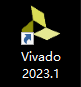
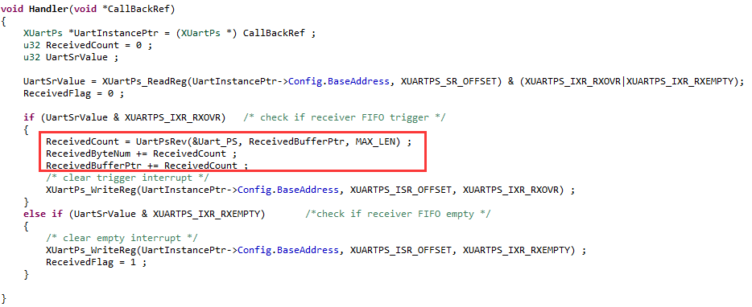
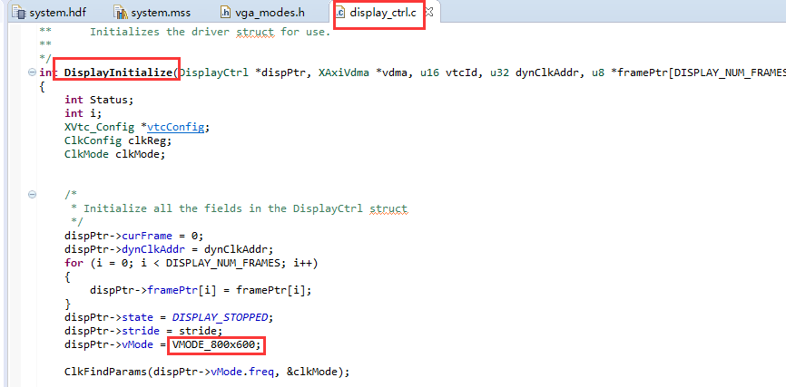

使用VDMA驱动HDMI显示#
实验Vivado工程为“vdma_hdmi_out”。
我们板子上是有HDMI接口的，在前面也介绍过了使用PL端实现HDMI的显示，但是如何使用PS控制HDMI显示内容呢？由于PS没有集成显示控制系统，还是需要借助PL来实现，怎么将数据传输到PL端的显示部分呢？这里就需要用到PS与PL之间的数据交互接口了。通常情况下，都会选择高性能的HP口作为PS与PL之间的高速数据传输。HP口最大数据宽度是64位，如果频率跑到150MHz，带宽就能达到9.6Gbps，可以满足图像数据的传输。
实现数据传输方案有很多，但是都离不开DMA系统，DMA系统可以完成显示数据从ddr3读出到显示器的显示，降低CPU的开销，VDMA是xilinx开发的特殊DMA，专门用于视频输入输出，是学习xilinx FPGA视频处理的重要内容。
前面的HDMI显示数据是PL内部产生的，这个实验中显示数据是PS生成的，然后PL通过VDMA送给HDMI接口。
FPGA工程师工作内容#
下面介绍FPGA工程师负责内容。
Vivado工程建立#
由于VDMA显示是一个非常重要的内容，本实验会详细介绍Vivado的搭建过程。
用”ps_hello”新建一个名为“vdma_hdmi_out”工程。打开ZYNQ配置，由于要从DDR中读出数据，我们采用高性能的HP口进行PS与PL之间的数据交互。打开HP0接口。
{kind=link}
配置I2C的EMIO#
使能I2C0，并且选择EMIO，这样可以把I2C连接到PL端，用于连接HDMI DDC
{kind=link}
配置时钟，FCLK_CLK0配置为100Mhz，FCLK_CLK1配置为142Mhz，这个时钟用于VDMA读取数据。这是由于1080p 60帧的频率为148.5MHz，但包含同步和消隐时间，而VDMA传输的都是有效数据，因此设置为142MHz就可以满足要求。
{kind=link}
配置中断#
配置中断，使能IRQ_F2P，接收PL端的中断

配置VDMA#
添加VDMA IP

按照下图配置VDMA基本参数，这里主要牵涉到两个接口，Memory Map接口，采用AXI4接口，与ZYNQ HP口进行数据交互，读取PS端DDR中的图像数据。ZYNQ HP接口为64位接口，在这里我们也设置成64位接口，当然也可以设置大一些，经过交叉互联模块可以进行数据宽度自动转换。另外一个接口就是Stream接口，也就是AXI4 stream流接口，在这里主要是用来传输图像数据到HDMI接口，由于RGB数据是24位的，因此这里的Stream Data Width也设置成24。Frame Buffers为帧缓存数，可以储存多帧图像，本实验中只使能1帧图像缓存。Line Buffer Depth类似于fifo缓存，以Stream Data Width为单位，设置大些，可以缓存的数据越多。
{kind=link}
配置VDMA高级参数，在这里使能Allow Unaligned Transfers，如果不使能，在软件中就要对数据按照Memory Map Data Width对齐，比如我们设置的是64，也就是要64位对齐。但这里使能了，就可以进行不对齐的数据传输。GenLock用于避免读和写通道同时访问同一个frame，而使图像显示不正常。由于我们只有一个读通道，设置它的意义并不是很大，需要与写通道配置才有用处。组合方式比较多，具体可以参考VDMA的手册PG020。
{kind=link}
添加视频时序控制器，此模块主要是用来产生图像的时序。
{kind=link}
配置视频时序控制器参数（简称VTC），Enable Generation是产生输出时序的使能，选择之后会出现vtiming_out总线信号。Enable Detetion是用于检测输入时序信号的使能，如果使能，会出现vtiming_in总线，由于本实验为图像输出，因此不使能。
{kind=link}
添加AXI流转视频输出控制器
{kind=link}
配置AXI流转视频输出控制器参数，Clock Mode选择Independent，指的是AXI4-Stream和Video的时钟是独立的，异步的，而common是同步的。在本实验中两者是异步的。Timing Mode的Slave mode是指VTC是时序的Slave，由Video Out模块通过clock enable控制时序的输出。Master Mode指VTC是时序的master，不由Video Out控制。详情参考模块用户手册pg044。
{kind=link}
添加自定义IP#
由于视频有很多分辨率，各种分辨的时钟频率不相同，需要使用一个动态时钟控制器，找到例程里的repo目录，复制到自己的目录下
{kind=link}
添加IP仓库
{kind=link}
添加完成以后可以看到很多IP
{kind=link}
添加动态时钟控制器，这个模块主要功能是根据不同的分辨率配置出不同的时钟输出，本质上是调用了锁相环，但要注意的是，此模块的参考时钟必须设置为100MHz
{kind=link}
添加HDMI编码器，用于将RGB数据转换为TMDS信号。#
{kind=link}
{kind=link}
连接Vivado可能无法自动连接的时钟信号
{kind=link}
连接其他一些关键信号

连接中断信号，需要先添加一个Concat IP，用于中断信号连接
{kind=link}
{kind=link}
使用Vivado自动连接功能，完成剩下的线连接
{kind=link}
选择所有模块自动连接
{kind=link}
导出IIC_0端口
{kind=link}
导出编码器端口TMDS
{kind=link}
修改其他端口的名称
{kind=link}
保存设计后按F6 检查设计，添加HDMI输出的xdc文件，约束管脚
{kind=link}
xdc文件内容如下
set_property IOSTANDARD TMDS_33 [get_ports TMDS_clk_n] set_property PACKAGE_PIN U13 [get_ports TMDS_clk_p] set_property IOSTANDARD TMDS_33 [get_ports TMDS_clk_p] set_property IOSTANDARD TMDS_33 [get_ports {TMDS_data_n[0]}] set_property PACKAGE_PIN W14 [get_ports {TMDS_data_p[0]}] set_property IOSTANDARD TMDS_33 [get_ports {TMDS_data_p[0]}] set_property IOSTANDARD TMDS_33 [get_ports {TMDS_data_n[1]}] set_property PACKAGE_PIN Y18 [get_ports {TMDS_data_p[1]}] set_property IOSTANDARD TMDS_33 [get_ports {TMDS_data_p[1]}] set_property IOSTANDARD TMDS_33 [get_ports {TMDS_data_n[2]}] set_property PACKAGE_PIN Y16 [get_ports {TMDS_data_p[2]}] set_property IOSTANDARD TMDS_33 [get_ports {TMDS_data_p[2]}] #set_property PACKAGE_PIN Y19 [get_ports {hdmi_hpd_tri_i[0]}] #set_property IOSTANDARD LVCMOS33 [get_ports {hdmi_hpd_tri_i[0]}] #set_property PACKAGE_PIN V16 [get_ports hdmi_oen] #set_property IOSTANDARD LVCMOS33 [get_ports hdmi_oen] set_property PACKAGE_PIN V18 [get_ports hdmi_ddc_scl_io] set_property IOSTANDARD LVCMOS33 [get_ports hdmi_ddc_scl_io] set_property PACKAGE_PIN V17 [get_ports hdmi_ddc_sda_io] set_property IOSTANDARD LVCMOS33 [get_ports hdmi_ddc_sda_io] |
编译生成bit文件，之后导出硬件


软件工程师工作内容#
以下为软件工程师负责内容。
Vitis软件编写调试#
运行Vitis，新建一个名为vdma_hdmi的APP，已经预备了相关程序
{kind=link}
由于程序文件较多，不再具体介绍，直接复制例程的源代码。删除src目录下的文件，使用例程的src目录文件代替
{kind=link}
在Vitis下按F5刷新
在display_ctrl文件夹中，diplay_ctrl.c主要是显示的控制，vga_mode.h中加入了一些显示分辨率的时序参数。
{kind=link}
在display_ctrl.c中，可以修改displayPtr->vMode，改变显示的分辨率。
{kind=link}
Dynclk文件中，主要功能是根据不同的分辨率配置锁相环的时钟输出，产生像素时钟。

有个概念注意要弄清楚，一般我们知道，图像有行和列的概念，在VDMA的寄存器中，即HSIZE和VSIZE，这里多了一个STRIDE寄存器，可以理解为一行存储的最大字节数，大于等于HSIZE。注意HSIZE和STRIDE都是以字节为单位。

举例说明：如果显示分辨率为1920*1080，24位深度，也就是3个字节，那么HSIZE就可以设置成1920*3，VSIZE为1080，STRIDE为1920*3；如果显示分辨率改为1280*720，那么HSIZE设置为1280*3，VSIZE为720，STRIDE可以不用变，仍然为1920*3。
连接HDMI输出端口到显示器，编译运行

显示器显示出一幅图片

本章小结#
本章介绍了使用VDMA实现HDMI的显示，使用的模块较多，需要大家多看看各个模块的文档，尤其是VDMA，VTC，Video Out，慢慢消化。此实验是后面显示实验的基础，还要是多花些时间学习。
ZYNQ-7000开发平台 FPGA教程 - Alinx官方网站